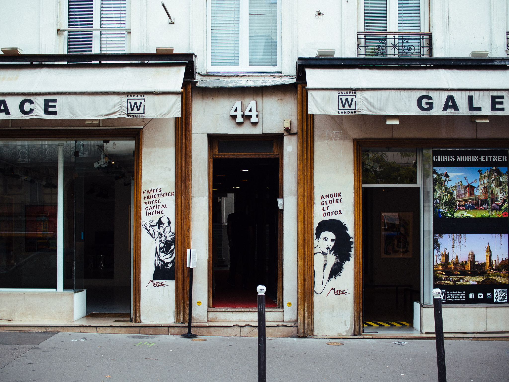

My Favorite Places
Photo Credit: R4vi Flickr via Compfight cc
I've been fortunate to do a decent amount of traveling in my life. From driving across the country to working in Switzerland — I had the opportunity to see many different places and look forward to seeing more in the future. Below is a list of my favorite places.
My Favorite Places Abroad
Paris, France
Zurich, Switzerland
Munich, Germany
Geneva, Switzerland
Bern, Switzerland
Lugano, Switzerland
My Favorite Places in the US